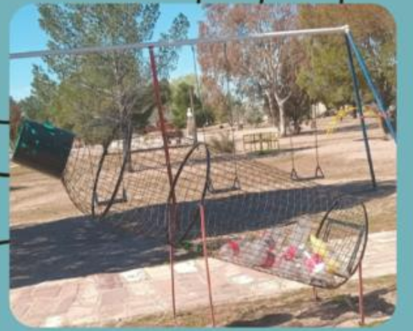
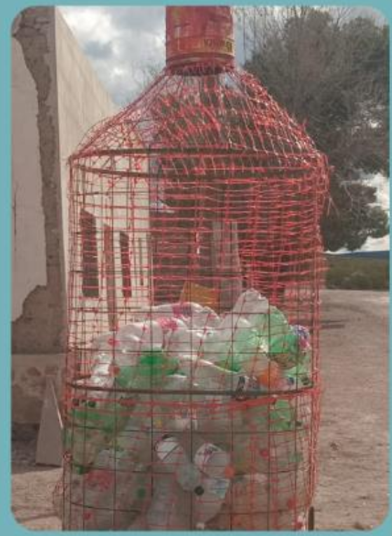
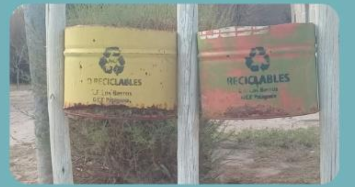
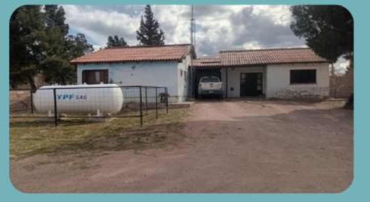

Si miramos a nuestro alrededor, la belleza de nuestro paraje es innegable. Sin embargo, mantener esa belleza requiere un trabajo constante. Hasta hace un tiempo era ver botellas tiradas por todos lados; hoy la realidad es otra: se han colocado contenedores exclusivamente para el almacenamiento de las botellas de plástico, que luego son llevadas a la ciudad para su reciclado.
En este artículo hablamos de la transformación que estamos viviendo gracias a los proyectos de reciclaje y la jornada de limpieza comunitaria. A continuación les comparto las diferentes acciones que se llevan a cabo en nuestro pueblo para mantenerlo limpio.

Acciones comunitarias
Habitantes de nuestro pueblo se reúnen para realizar una limpieza comunitaria en diferentes puntos del paraje; recorrieron los principales espacios públicos para recolectar, limpiar y embellecer nuestro entorno.

Con estas diferentes iniciativas no sólo se busca mejorar la imagen de nuestro pueblo, sino también concientizar sobre la importancia de no tirar la basura en la vía pública, reciclar y cuidar el medio ambiente. Queda demostrado que el bienestar de nuestro pueblo depende de toda la comunidad en general.

